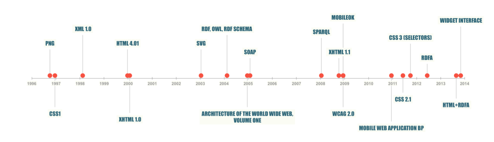
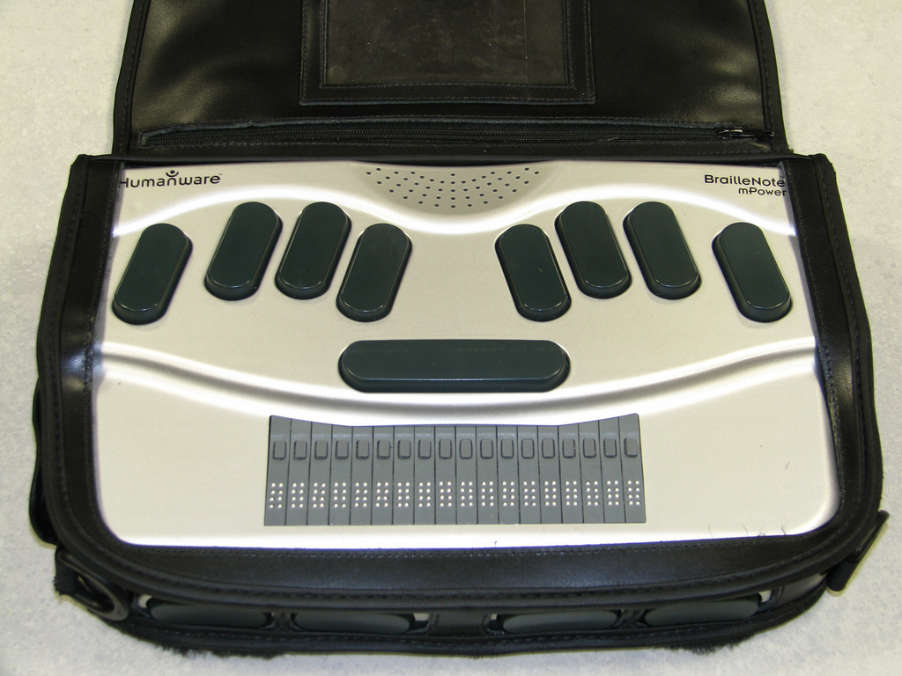
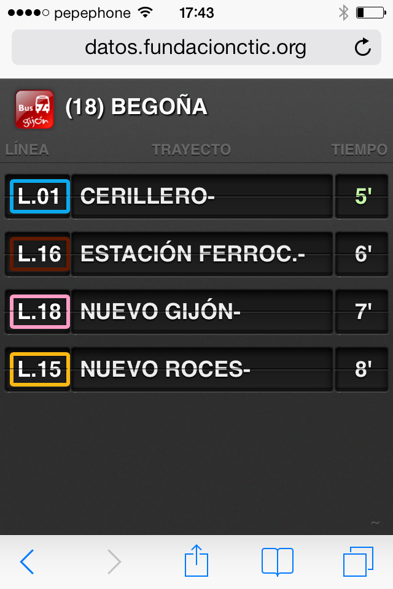
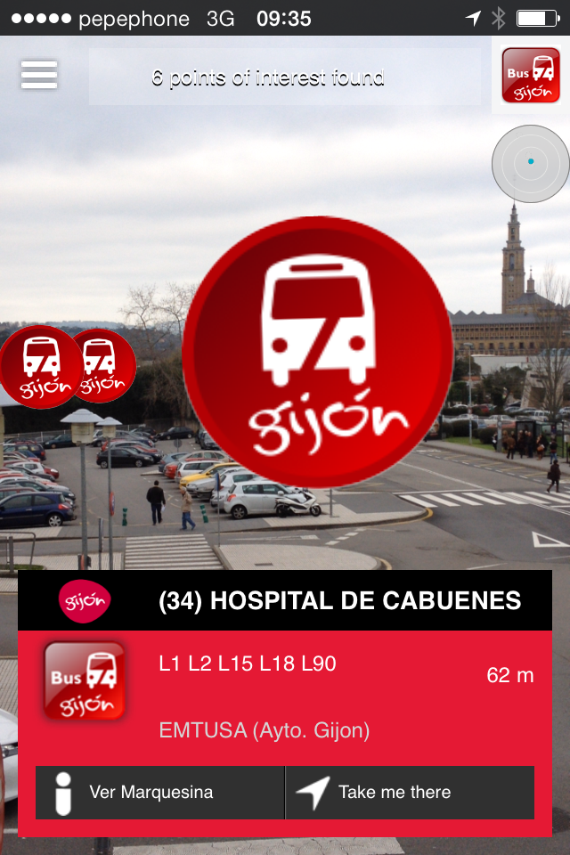
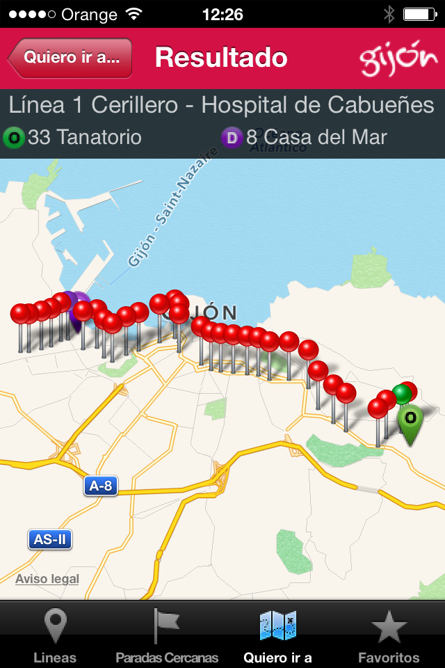
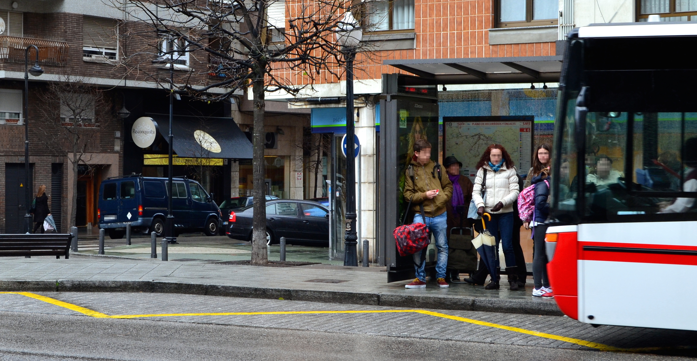
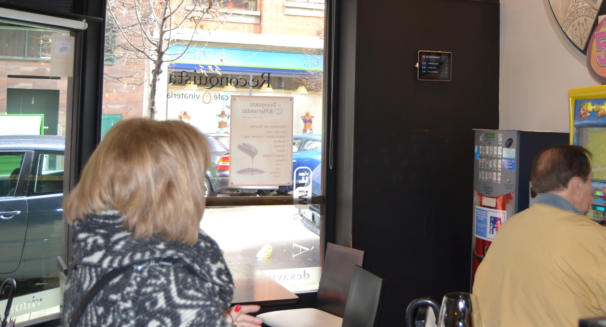

Una Web para todos
RETOS DEL SECTOR TURÍSTICO: UN TURISMO PARA TODOS
Un mundo en constante cambio
La Web ha transformado nuestras vidas
- Comercio
- Turismo
- Procesos industriales
- AAPP
- Conocimiento…
(pre)Historia de la Web

La "Web" en 1989

(1989) El primer boceto

La Web en 1990

(1990) WorldWideWeb

La Web crece

W3C?
World Wide Web Consortium

- Organismo neutro fundado en 1994 por Tim Berners-Lee
- 60 personas en el Team
- 382 Miembros
- +70 Grupos del W3C (con más de 1.500 investigadores)
- Relaciones con otros organismos estandarizadores
{kind=link}
Realmente WorldWide

W3C.es @ CTIC

¿Qué hace el W3C?
Voice WebCGM PICS HTMLTidy Databinding WebOntology HTML CompoundDocumentFormats SPARQL WAI Web APIs Libwww PatentPolicy OWL TimedText XMLEncryption Multimodal XML RichWebClients XMLProcessing DeviceIndependence URI/URL DOM HTTP Accessibility RDF WebApplicationFormats XMLBase Jigsaw XLink I18N P3P QualityAssurance XMLKeyManagement UbiquitousWeb InkML Incubator XPath WebServices XForms CSS SOAP Mobile SMIL Rules SVG Amaya SemanticWeb MathML
Especificaciones, directrices y herramientas abiertas con la política de patentes más transparente en Internet
+200 Recomendaciones

Una Web universal
...ofrece la misma información y servicios a los usuarios, independientemente de quienes son, donde están, los sistemas que usan o la forma mediante la que se conectan
...independientemente de la forma de acceso
- PCs, teléfonos, TVs, PDAs, dispositivos en electrodomésticos o en automóviles...
- limitación en: ancho de banda, pantalla, colores, sonido...
¿Escritorio o móvil?
Cada vez más difícil esa distinción
http://en.wikipedia.org/wiki/Tablet_computer

Toylet - Foto: Wired
{kind=link}
...independientemente de "discapacidades"...
- distinción de colores, ceguera, ...
- dificultades de manejo de teclados, ratón, ...
- dislexia, dificultades cognitivas o neurológicas, ...

...teniendo en cuenta ls diferencias culturales
- sentidos de escritura, diferentes tipos de teclados, ...
- formato de fechas, números de teléfono, códigos postales, IDs,...
Una única Web
Los estándares son clave
Construyendo la Plataforma Web Abierta
- Interfaces: Geo-localización, giroscopios, cámaras, NFC, …
- Multimedia: Audio y vídeo, gráficos, animaciones, fuentes de alta calidad, …
- Multidispositivo: varias resoluciones, táctil, teclados, voz, vibración, …
- Comunicaciones: cliente-servidor, real-time, p2p, sockets, …
- Sociedad: privacidad, seguridad, multilingüe, accesibilidad
- Procesam. automático: semántica, interoperabilidad, …
Iniciativa de Web Móvil
Iniciativa de Accesibilidad Web
Transversal a todos los Grupos de Trabajo
WCAG 2.0
- Web Content Accessibility Guidelines
- Base para la normativa española
- Normativa UNE 139803:2012
- (Requisitos de accesibilidad para contenidos en la Web )
- A - AA - AAA
- AA es el mínimo para este sector
Open Data: el futuro del turismo
Turismo como sector prioritario
Un nuevo canal para llegar al turista
Multiplicación de servicios
Ejemplo: transporte urbano
Open Data Gijón
Infinidad de (potenciales) usos
Primeros desarrollos

Innovación

Layar App
Infinitas posiblidades

Diferentes audiencias…

Servicios a ciudadanos/turistas

Aprovechando recursos públicos

W3C evoluciona con la sociedad
La Web como plataforma ubícua que cumple los derechos fundamentales
¡Muchas Gracias!
http://www.w3c.es/Presentaciones/2014/0708-Accesibilidad_UIMP-MA